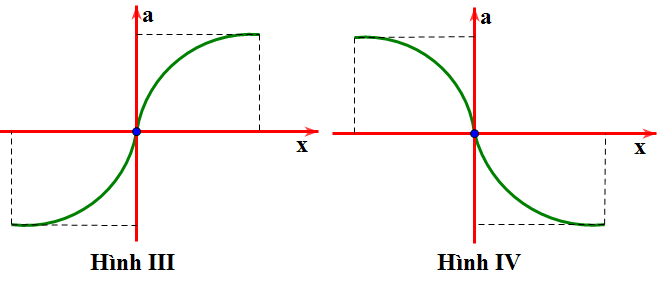
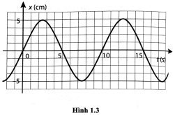
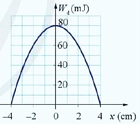

📋 Quy định làm bài
- Thời gian: 45 phút. Còn 10 phút hệ thống nhắc; hết giờ có thêm 5 phút gia hạn rồi tự động nộp.
- Bài làm ở chế độ toàn màn hình. Chuyển tab, mất focus, thoát toàn màn hình đều bị ghi nhận và báo cho giáo viên.
- Không dùng chuột phải, sao chép/dán, phím tắt. Trợ lý AI chỉ mở sau khi nộp bài. Phần tự luận: AI gợi ý điểm, giáo viên duyệt điểm chính thức.
PHẦN I. Câu trắc nghiệm nhiều phương án lựa chọn
Mỗi câu có 4 phương án, chỉ chọn một đáp án đúng (0,25 điểm).
1
Công thức nào sau đây biểu diễn sự liên hệ giữa tần số góc $\omega$, tần số $f$ và chu kì $T$ của một dao động điều hòa?
2
Đơn vị của tần số dao động trong hệ SI là
3
Một người xách một xô nước đi trên đường, mỗi bước đi được 60 cm. Chu kỳ dao động riêng của nước trong xô là 1 s. Nước trong xô bị sóng sánh mạnh nhất khi người đó đi với tốc độ là
4
Đồ thị của vận tốc theo li độ của một vật dao động điều hòa là
5
Một vật nhỏ thực hiện dao động điều hòa theo phương trình $x=10\sin(4\pi t+\pi/2)$ (cm) với $t$ tính bằng giây. Động năng của vật đó biến thiên với chu kì bằng
6
Một chất điểm dao động điều hoà trong 10 dao động toàn phần chất điểm đi được quãng đường dài 120 cm. Quỹ đạo dao động của chất điểm có chiều dài là
7
Đại lượng cho biết số dao động mà vật thực hiện được trong 1 giây gọi là
8
Một vật dao động điều hòa theo phương trình $x=A\cos(\omega t+\varphi)$ ($\omega>0$). Tần số góc của dao động là
9
Một vật dao động điều hòa với phương trình $x=10\cos(10\pi t)$ cm. Tại thời điểm $t=0{,}25$ s thì vật có li độ là
10
Đồ thị nào sau đây cho biết mối liên hệ đúng giữa gia tốc $a$ và li độ $x$ trong dao động điều hòa của một chất điểm?


11
Chuyển động nào sau đây không được coi là dao động cơ?
12
Một con lắc lò xo dao động điều hoà, cơ năng toàn phần có giá trị là $W$ thì:
13
Một chất điểm dao động điều hòa theo phương trình $x=4\cos\frac{2\pi}{3}t$ ($x$ tính bằng cm; $t$ tính bằng s). Kể từ $t=0$, chất điểm đi qua vị trí có li độ $x=-2$ cm lần thứ 2011 tại thời điểm
14
Cho đồ thị li độ theo thời gian của một vật dao động điều hoà như hình vẽ. Phát biểu nào sau đây là đúng?

15
Một vật dao động điều hòa trên trục Ox. Li độ của vật
16
Trong dao động điều hòa, nhóm đại lượng nào sau đây không thay đổi theo thời gian?
17
Đồ thị biểu diễn $x=A\cos(\omega t+\varphi)$. Phương trình vận tốc dao động là:

18
Một chất điểm dao động điều hòa với chu kì $T$. Trong khoảng thời gian ngắn nhất khi đi từ vị trí biên có li độ $x=A$ đến vị trí $x=\frac{-A}{2}$, chất điểm có tốc độ trung bình là
PHẦN II. Câu trắc nghiệm đúng sai
Trong mỗi ý a), b), c), d) chọn Đúng hoặc Sai. Đúng 1 ý: 0,1 · 2 ý: 0,25 · 3 ý: 0,5 · 4 ý: 1,0 điểm.
1
Một vật dao động điều hòa có phương trình là $x=4\cos(5\pi t-\pi/3)$ cm.
a) Biên độ dao động của vật là $A=4$ cm.
b) Pha ban đầu của vật là $-\pi/3$.
c) Pha ở thời điểm $t$ của dao động là $(5\pi t-\pi/3)$.
d) Chu kì dao động là $T=0{,}4$ s.
2
Khi nói về dao động cưỡng bức thì
a) Dao động của con lắc đồng hồ là dao động cưỡng bức.
b) Biên độ của dao động cưỡng bức là biên độ của lực cưỡng bức.
c) Dao động cưỡng bức có biên độ không đổi và có tần số bằng tần số của lực cưỡng bức.
d) Dao động cưỡng bức có tần số nhỏ hơn tần số của lực cưỡng bức.
3
Một chất điểm dao động điều hòa trên trục Ox có phương trình: $x=8\cos\left(\pi t+\frac{\pi}{4}\right)$ ($x$ tính bằng cm, $t$ tính bằng s).
a) Chất điểm chuyển động trên đoạn thẳng dài 8 cm.
b) Chu kì dao động là 4 s.
c) Vận tốc của chất điểm tại vị trí cân bằng là 8 cm/s.
d) Kể từ lúc $t=0$, thời điểm đầu tiên chất điểm đi qua vị trí gia tốc cực đại bằng 0,75 s.
4
Đồ thị hình 3.4 mô tả sự thay đổi động năng theo li độ của quả cầu có khối lượng 400 g trong một con lắc lò xo treo thẳng đứng.
Hình 3.4. Đồ thị mô tả sự thay đổi của động năng theo li độ của quả cầu trong con lắc lò xo thẳng đứng.

Hình 3.4. Đồ thị mô tả sự thay đổi của động năng theo li độ của quả cầu trong con lắc lò xo thẳng đứng.
a) Biên độ dao động của con lắc là 4 cm.
b) Từ đồ thị ta thấy $W=W_{đmax}=80$ J
c) Tốc độ cực đại của vật dao động: $v_{\mathrm{max}}=\frac{\sqrt{10}}{5}$ (m/s)
d) Tại $x=2$ cm, thế năng của vật: $W_t=20$ mJ.
PHẦN III. Câu trắc nghiệm trả lời ngắn
Điền đáp số (có thể dùng dấu phẩy hoặc dấu chấm thập phân). Mỗi câu 0,25 điểm.
1
Một chất điểm dao động điều hòa trên trục Ox. Khi chất điểm đi qua vị trí cân bằng thì tốc độ của nó là 30 cm/s. Khi chất điểm có tốc độ là 15 cm/s thì gia tốc của nó có độ lớn là  cm/s$^2$. Biên độ dao động của chất điểm là bao nhiêu cm
cm/s$^2$. Biên độ dao động của chất điểm là bao nhiêu cm
cm/s$^2$. Biên độ dao động của chất điểm là bao nhiêu cm cm
2
Xét vật dao động điều hòa với tần số góc $10\pi$ rad/s và biên độ $A=$ cm. Ở vị trí vật có vận tốc 10
cm. Ở vị trí vật có vận tốc 10 cm/s thì gia tốc lúc này có độ lớn là bao nhiêu m/s$^2$? (Kết quả làm tròn đến 1 chữ số thập phân sau dấu phẩy)
cm/s thì gia tốc lúc này có độ lớn là bao nhiêu m/s$^2$? (Kết quả làm tròn đến 1 chữ số thập phân sau dấu phẩy)
cm. Ở vị trí vật có vận tốc 10 cm/s thì gia tốc lúc này có độ lớn là bao nhiêu m/s$^2$? (Kết quả làm tròn đến 1 chữ số thập phân sau dấu phẩy) m/s²
3

Pit-tông của một động cơ đốt trong dao động trên một đoạn thẳng dài 16 cm và làm cho trục khuỷu của động cơ quay đều như hình. Biên độ dao động của một điểm trên pit-tông bằng bao nhiêu cm?
cm
4
Một con lắc đơn có chiều dài 1 m khối lượng 100 g dao động trong mặt phẳng thẳng đứng đi qua điểm treo tại nơi có $g=10$ m/s$^2$. Lấy mốc thế năng ở vị trí cân bằng. Bỏ qua mọi ma sát. Khi sợi dây treo hợp với phương thẳng đứng một góc $30^\circ$ thì tốc độ của vật nặng là 0,3 m/s. Cơ năng của con lắc đơn là bao nhiêu Jun? (làm tròn đến 2 chữ số thập phân)
J
5
Một chất điểm dao động điều hòa theo trục Ox với tốc độ cực đại $v_0$. Trong khoảng thời gian từ $t=t_1$ đến $t=2t_1$ vận tốc dao động của vật tăng từ $0{,}6v_0$ đến $v_0$ rồi giảm về $0{,}7v_0$. Nếu $v_0t_1=11$ (cm) thì li độ của vật ở thời điểm $t=0$ có giá trị là bao nhiêu cm? Kết quả làm tròn đến một chữ số thập phân.
cm